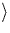
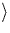

Normally screws are so cheap and small and simple you think of them as unimportant. But now, as your Quality awareness becomes stronger, you realise that this one, individual, particular screw is neither cheap nor small nor unimportant. Right now this screw is worth exactly the selling price of the whole motorcycle, because the motorcycle is actually valueless until you get the screw out. With this re-evaluation of the screw comes a willingness to expand your knowledge of it.
R. Pirsig
Zen and the Art of Motorcycle Maintenance
Although conclusions have been drawn at the end of each individual chapter, it is useful to discuss some general conclusions here, as well as further work that could stem from that presented in this thesis.
The results for H in III-V materials has potential for expansion to other members of the III-V family, notably GaN which shows great potential as a wide bandgap semiconductor. Such an investigation for the Group II passivation is currently underway by Torres and Öberg [276], and preliminary results suggest a transition from BC to AB hydrogen for various sized Group II impurity in GaN. The advantage of such work is the variety of different III-Vs and Group II impurities which makes it possible to draw general trends depending on host and impurity type.
There are many conclusions to be drawn from the O in Si work. Our
successful collaboration with a variety of experimental groups has
shown the advantage of productive experimental/theoretical discussion.
Recent developments in computing power and parallelisation of the code
mean we can now tackle reasonably large defect systems such as the
(CH)iO4i shallow thermal donor which would have been
impossible only a few years ago. Theory is now equipped to take a
place as a serious investigative tool alongside conventional methods
such as FTIR and DLTS, and theoretical investigations can now help to
point experimental groups in directions for their
research![[*]](foot_motif.gif) .
.
The problem of oxygen in silicon is a tricky one, since oxygen seems able to complex with most other impurities, both extrinsic and intrinsic. The difficulty is compounded for theory since many of the defect structures formed are only metastable (for example, thermal donors), and so absolute ground state energy comparison cannot necessarily be used as a tool for determining the dominant defect structures.
Formation energies with AIMPRO for O-related complexes have proved difficult (such as VOn complexes), possibly due to inadequate modelling of the charge density via our intermediate fits. In future we may be able to improve on this through the use of the new supercell AIMPRO code under development in Newcastle, possibly in conjunction with gradient corrections to the exchange-correlation energy. Although many kinetic models for TD formation and destruction have been proposed[147,143,277], for these to achieve the desired accuracy, formation energies of the individual species need to be determined. This has not been done to date. Hopefully with the improvements to AIMPRO described above, coupled with structural models for the various component species, we may be able to achieve this.
Significant advances have been made in our understanding of O in Si as a result of the work in this thesis. The behaviour of O in the presence of N has been well characterised, both through the primary electrically inactive NNO defect, and the more elusive NO2 shallow thermal donor, as well as the intermediate NiOi species which for the first time shows direct evidence of interaction between Ni and oxygen rather than N2. In future there will hopefully be direct evidence for the incorporation of N in the shallow thermal donor centres, and they may be produced in sufficient numbers for clear identification through their vibrational modes. Various N/O experiments have been suggested here which would fill in the remaining gaps in our understanding of how N2 pairs diffuse, and complex with either Oi or O2i dimers.
Crucially we have demonstrated a general mechanism whereby defects that normally possess a deep gap level (such as Ni) can have this level electrostatically compressed, pushing it up to become a shallow level lying close to the conduction band edge. It may be possible to invoke a similar mechanism in other materials, possibly those where it has traditionally been difficult to produce shallow donor doping. We have shown that this mechanism can occur in defects containing both Ni and (CH)i, and although there is no direct experimental evidence yet that Ni or (CH)i lie in the core of the shallow thermal donor defects, we have presented a strong case in favour of these models.
The results on rapidly diffusing O2i dimers appear to shed light on many otherwise confusing results, such as the anomalous formation rates of VO2 and the thermal donors. Their role in thermal donor formation is now clearer, although there is still a long way to go on this problem.
Finally the results on the thermal donors show a variety of different O-based complexes which display shallow double donor character. The di-y-lid structure, formed from a combination of two dimers, seems to fit most of the available symmetry and structural evidence, and possesses vibrational modes very close to those of experiment. A variant of this with Al substituted for the core Si acts as a single shallow donor and is also consistent with experimental data for the third type of NL10 defect, NL10(Al).
We thus have a remarkably consistent set of structural predictions for shallow donor defects in Cz-Si, all based around the combination of two dimers. The thermal donors form around a di-y-lid, which occurs when two dimers combine. When these two dimers aggregate at Als, Ni or (CH)i, they form instead a shallow thermal donor defect. Such a picture does not yet explain the whole family of thermal donors, including the various anomalous properties of TD1, although the work presented in this thesis goes a long way to selecting between various models.
Long time annealing studies show that the shallow thermal donors form
after the thermal donors [10], which is consistent
with FTIR studies; these show the TD absorption at 999 cm-1 drop
off at 450 after 150 hours or so, at the same time as strong
absorption at 1012, 1006 and 1015 cm-1 begins. These lines are
believed to be associated with the shallow thermal donors
[239]. Discussion in Section 9.7 suggests
that early Sii concentrations are low. This leads to a consistent
picture whereby small initial Sii concentrations lead to low Ci
and hence STD (CH)iO4i concentrations. After long annealing
times thermal donors form, and then transform into quartz
precipitates, releasing Sii. These convert the remaining Cs
into Ci, providing a sudden glut of (CH)iO4i defects.
Thereafter, any more Sii forming has to aggregate into
after 150 hours or so, at the same time as strong
absorption at 1012, 1006 and 1015 cm-1 begins. These lines are
believed to be associated with the shallow thermal donors
[239]. Discussion in Section 9.7 suggests
that early Sii concentrations are low. This leads to a consistent
picture whereby small initial Sii concentrations lead to low Ci
and hence STD (CH)iO4i concentrations. After long annealing
times thermal donors form, and then transform into quartz
precipitates, releasing Sii. These convert the remaining Cs
into Ci, providing a sudden glut of (CH)iO4i defects.
Thereafter, any more Sii forming has to aggregate into  311
rod-like aggregates, as seen with HREM[278].
311
rod-like aggregates, as seen with HREM[278].
For reasons of limited space, results on C/O defects such as
CiO2i and CsOni where 1  n
n  3 have
been excluded from this thesis, but this work is important and a
thorough study of C/O defects is essential in order to understand O in
Si. C primarily exists as a substitutional defect (Cs), but can
switch sites with a silicon self-interstitial (Sii) through a
`kick-out' mechanism to produce interstitial carbon (Ci). Thus
[Ci] can be taken as an indirect marker of the Sii
concentration. P-line defects are observed using PL (believed to be
CiO2i) within the first 15 minutes of annealing Cz-Si at
450
3 have
been excluded from this thesis, but this work is important and a
thorough study of C/O defects is essential in order to understand O in
Si. C primarily exists as a substitutional defect (Cs), but can
switch sites with a silicon self-interstitial (Sii) through a
`kick-out' mechanism to produce interstitial carbon (Ci). Thus
[Ci] can be taken as an indirect marker of the Sii
concentration. P-line defects are observed using PL (believed to be
CiO2i) within the first 15 minutes of annealing Cz-Si at
450 C[197], suggesting that there is either an
initial pool of Ci, or some initial Sii. However the
concentration of these defects is extremely small, probably cm-3[279]. Annealing C rich CZ-Si gives
rise to a set of vibrational lines associated with C/O defect
complexes instead of thermal donors. Due to the high frequency of the
C-modes it has been suggested that these are CiOni defects
[239], and if this was the case it would show that
Sii must be produced during early Cz-Si annealing. However
preliminary modelling results with AIMPRO show that CsOni
defects produce vibrational modes close to these frequencies, and the
modes due to the C are high because the Cs is compressed by
neighbouring oxygen. In combination with the low initial
concentration of P-line defects, these results suggest that Sii is
not present in significant quantities in the earlier stages of
annealing, and thus provide more evidence that Sii does not lie in
the core of thermal donors. In addition the role of C in suppressing
thermal donors is not fully understood (since C appears to increase
the rate of thermal donor dissociation rather than decreasing the rate
of formation). Further studies of C/O defects are currently
underway[280].
C[197], suggesting that there is either an
initial pool of Ci, or some initial Sii. However the
concentration of these defects is extremely small, probably cm-3[279]. Annealing C rich CZ-Si gives
rise to a set of vibrational lines associated with C/O defect
complexes instead of thermal donors. Due to the high frequency of the
C-modes it has been suggested that these are CiOni defects
[239], and if this was the case it would show that
Sii must be produced during early Cz-Si annealing. However
preliminary modelling results with AIMPRO show that CsOni
defects produce vibrational modes close to these frequencies, and the
modes due to the C are high because the Cs is compressed by
neighbouring oxygen. In combination with the low initial
concentration of P-line defects, these results suggest that Sii is
not present in significant quantities in the earlier stages of
annealing, and thus provide more evidence that Sii does not lie in
the core of thermal donors. In addition the role of C in suppressing
thermal donors is not fully understood (since C appears to increase
the rate of thermal donor dissociation rather than decreasing the rate
of formation). Further studies of C/O defects are currently
underway[280].
The work in this thesis has opened up a number of new questions (and failed to answer others!) and many of these deserve further study. As well as modelling and/or explaining current experimental data we have also attempted to make predictions, and there are some experiments it would be useful to perform to examine these. In addition there are more general questions such as the mobility of N2 pairs which could be checked by experiment. Where such experiments suggest themselves, these have been described in the text. This following section is therefore restricted to further theoretical modelling work that could extend the results in this thesis.
It would be useful to produce a full potential surface map for dimer diffusion to prove that we have located the lowest energy path between the end structures. If the assymetric dimer structure is freezing in at low temperatures we could calculate a diffusion barrier between the assymetric and symmetric forms and hence a temperature at which they could no longer switch between the two.
The trimer requires more investigation of various alternative structures in order to determine both the lowest energy, and a structure that could give rise to the absorption at 1006 cm-1. The results presented here were performed in quite small clusters given the size of the defects, and for reliability the convergence with cluster size should be checked by repeating these in larger clusters. In addition, determination of binding energies and potential diffusion paths for the trimer would be important to calculate.
The thermal donor problem still has many unanswered questions that we can address. There are several other possible TD structures not investigated here (notably the +2 variant of the `Manx' trimer), and it would be useful to repeat many of these calculations using the supercell to provide reliable energy differences between alternative structures. We are still unsure of the nature of TD1 and TD2, and are far from a definitive explanation of higher order TDs. Such analysis could be helped through a detailed correlation of electronic IR with vibrational IR absorption data showing the formation stages of the TDs, and it is clear that this problem will not be solved without extensive collaboration with experimental groups.
Notable related problems are the mechanism for H-passivation of thermal donors, and carbon suppression of thermal donors, both of which are currently under investigation using AIMPRO. Neither of these are obvious, for example, H-passivation seems to remove both donor states from the gap with the addition of only a single H [203], suggesting the H is stabilising the TD in an inactive form rather than saturating dangling bonds.
Clues to the aggregation processes in TDs could come from studying the aggregation of O in higher order VOn complexes, , and increased computational power means we now have the ability to do this. If we can increase the ease with which diffusion barriers are obtained, it would be nice to model the migration barrier for other species, notably Ni and N2i.
Finally, there are many other atomic species that can complex with oxygen which have not been addressed here. A variety of hydrogen-oxygen complexes are known to form [157], and oxygen can also complex with many metallic species, from Group II elements [281] to rare earth impurities such as Er [282].
Work of this kind could be accused of being `defect stamp collecting', i.e. a defect is examined, a structure produced and stuck in the album, and the process then moves on to the next. However such accusations are somewhat unfair. The real strength of these results comes from considering them as a whole, in the context of the additionally available experimental work. In this way they serve to show a whole cycle of defect formation processes and how they relate to the treatment and properties of the sample.
Applied theoretical modelling such as this fulfils three roles. Its first role is to confirm; either to produce results that can be compared to other calculations performed using different methods, or to confirm ideas built up from experimental results (see, for example, results on Oi in this thesis). More usefully, theory can explain, i.e. take unexplained, and maybe even apparently contradictory experimental results, and produce a theory that ties them all together. This is true of much of the work in this thesis, notably the VOn work and N/O complexes. However, the third and most important job of theory is to predict. In this case, theory should identify general mechanisms and trends, suggest new experiments and techniques, and open up new fields of work. Ideally we would like it to be able to provide new ways of examining things, and find underlying patterns, trends and mechanisms. It is at this stage that theory moves far beyond the `stamp collecting' metaphor, and hopefully this has been achieved with some of the results in this thesis such as the `wonderbra mechanism'.